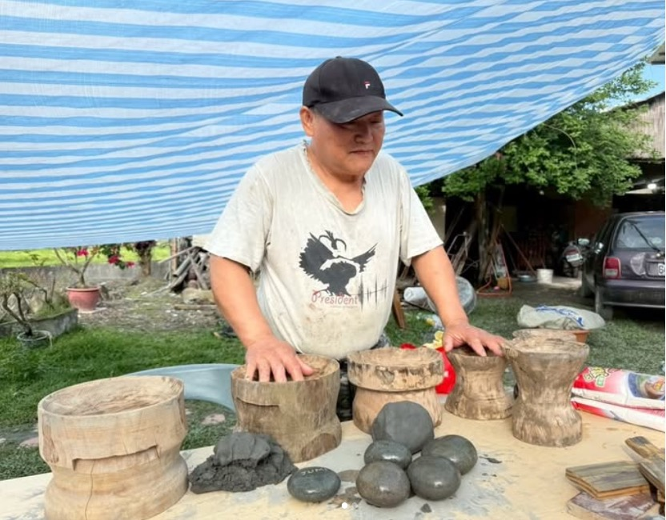

小陶甕是不是非常可愛？這其實是 afo Ina 用來測試黏土能不能用來使用的小撇步，在野外採集而來的土壤，沾點水，嘗試捏塑成形，通常就是這樣拇指口徑大小的小陶甕，如果可以成形，就代表這個區域的土壤可以用來製作器物。
採集而來的土能夠捏塑成形來判斷是否可以使用，但是如果真正需要使用的陶土，還需要經過許多程序的處理。根據 tilo 大哥的方法，首先，需要過濾雜質，選擇合適孔洞的篩網；再來要加入糯米粉攪拌，增加黏性，最後要過濾泥水，留下黏土的部分，並且可以搭配石膏板曬土增加獲取黏土的效率。

tilo 大哥的製陶撇步，除了加入糯米粉於黏土的特殊方法之外，tilo 大哥還會自己製作與挑選合適的工具。在製作陶甕時，tilo 大哥分享了自己刨製的木器，方便讓陶甕底部成形，並搭配木板和海邊撿來的卵石，拉高陶壁，最好再收口，一個充滿手感的基本陶甕就成形了。